{kind=link}
{kind=link}
 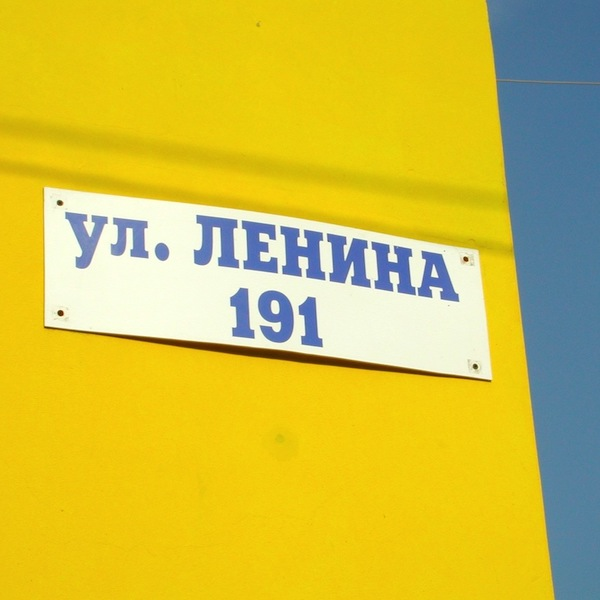
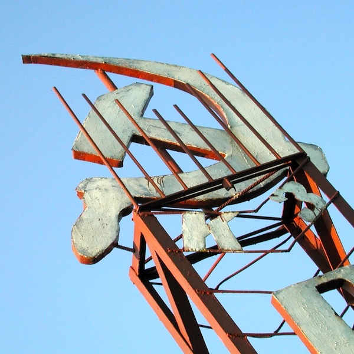
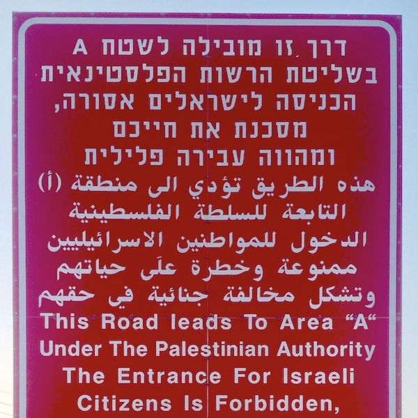
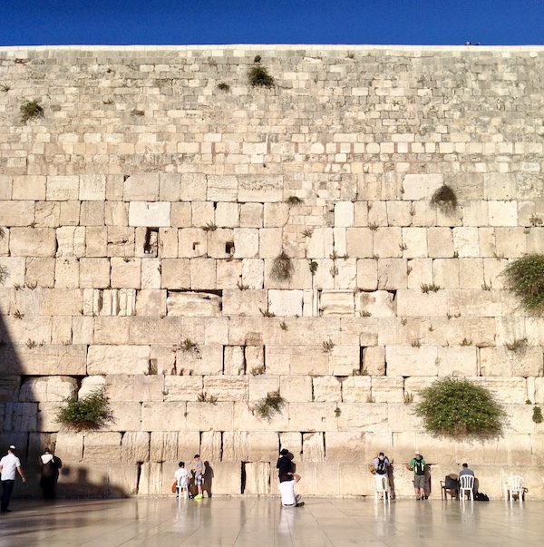
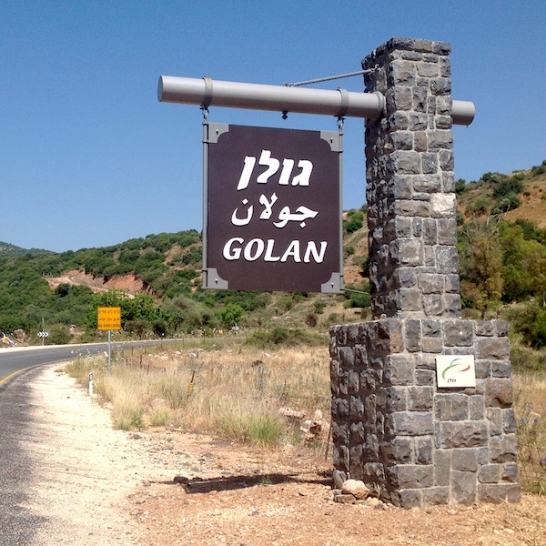
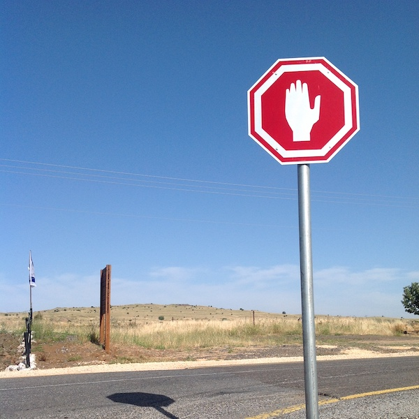
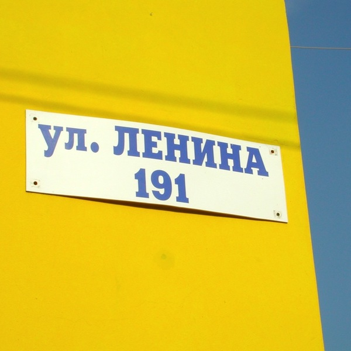
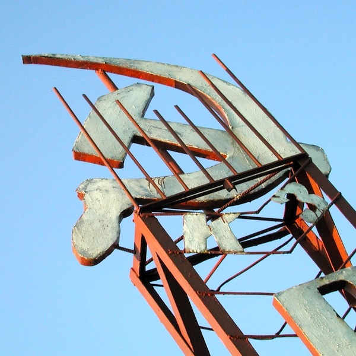
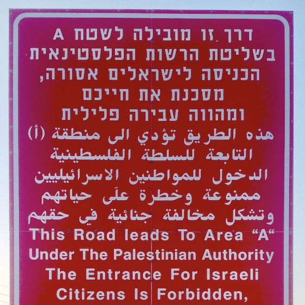
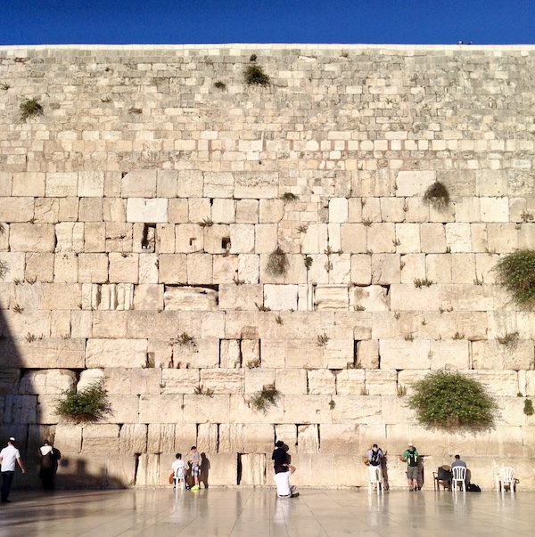
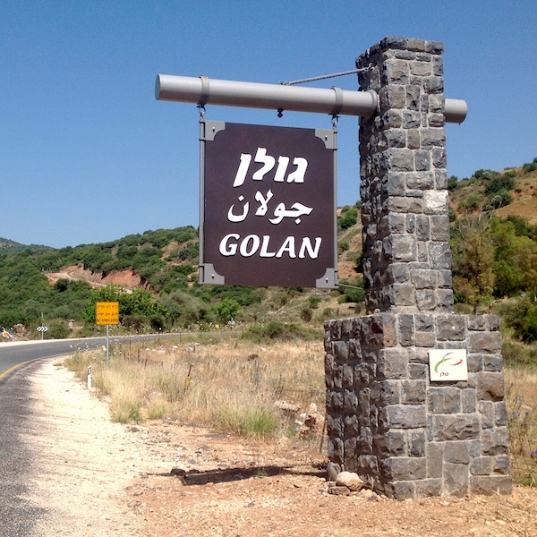
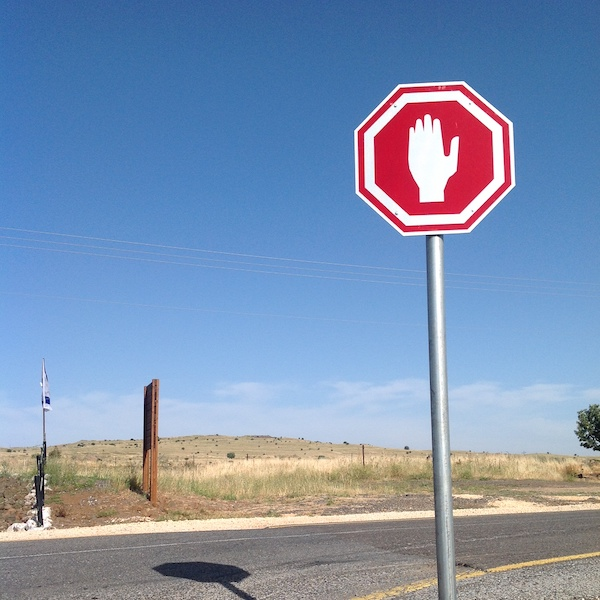
{kind=link}
{kind=link}
{kind=link}
{kind=link}
{kind=link}
{kind=link}
🇮🇱 🇸🇾 Golan Heights
🇷🇺 🇪🇪 Ivangorod
🇰🇷 🇰🇵 Korea
🇫🇷 🇮🇹 Mont Blanc
🇬🇧 🇮🇪 Northern Ireland
🇮🇱 🇱🇧 Shebaa Farms
🇲🇩 🇷🇺 Transnistria
🇵🇸 🇮🇱 West Bank

 California / Oregon
California / Oregon 
 Delaware Wedge
Delaware Wedge
 Texas / New Mexico
Texas / New Mexico🇬🇪 🇷🇺 Abkhazia
🇮🇷 🇦🇪 Abu Musa
🇸🇩 🇸🇸 Abyei
🇷🇼 🇧🇮 Akanyaru River
🇨🇳 🇮🇳 Aksai Chin
🇦🇽 🇸🇪 Åland
🇮🇩 🇲🇾 Ambalat
🇧🇷 🇺🇾 Arroyo de la Invernada
🇦🇲 🇦🇿 Artsvashen
🇮🇳 🇨🇳 Arunachal Pradesh
🇦🇺 🇮🇩 Ashmore and Cartier Islands
🇨🇴 🇭🇳 Bajo Nuevo Bank
🇧🇹 🇨🇳 Bhutan
🇪🇬 🇸🇩 Bir Tawil
🇹🇭 🇲🇾 Bukit Jeli
🇭🇳 🇸🇻 Conejo Island
🇨🇬 🇨🇩 Congo River
🇺🇦 🇷🇺 Crimea
🇪🇸 🇲🇦 Cueta
🇭🇷 🇷🇸 Danube River
🇬🇪 🇦🇿 David Gareja Monastery
🇮🇴 🇲🇺 Diego Garcia
🇲🇲 🇹🇭 Doi Lang
🇺🇦 🇷🇺 Donbas
🇪🇷 🇩🇯 Doumeira
🇸🇮 🇭🇷 Dragonja River
🇧🇦 🇷🇸 Drina River
🇬🇧 🇦🇷 Falkland Islands
🇧🇭 🇶🇦 Fasht ad Dibal
🇰🇬 🇹🇯 Fergana Valley
🇫🇷 🇸🇷 French Guiana
🇵🇸 🇮🇱 Gaza Strip
🇩🇿 🇱🇾 Ghat
🇬🇮 🇪🇸 Gibraltar
🇮🇷 🇦🇪 Greater and Lesser Tunbs
🇬🇾 🇻🇪 Guayana Esequiba
🇪🇬 🇸🇩 Hala’ib Triangle
🇹🇷 🇸🇾 Hatay Province
🇰🇪 🇸🇸 Ilemi Triangle
🇧🇷 🇺🇾 Ilha Brasileira
🇬🇷 🇹🇷 Imia / Kardak
🇰🇬 🇹🇯 Isfara Valley
🇧🇴 🇧🇷 Isla Suárez
🇮🇳 🇳🇵 Kalapani
🇿🇦 🇸🇿 KaNgwane
🇵🇰 🇮🇳 Kashmir
🇴🇲 🇾🇪 Khuriya Muriya Islands
🇧🇫 🇧🇯 Koalu
🇽🇰 🇷🇸 Kosovo
🇨🇮 🇬🇳 Kpéaba
🇷🇺 🇨🇳 Kutuzov Island
🇿🇲 🇨🇩 Luapala
🇷🇺 🇰🇿 Malyy Zhemchuzhnyy
🇾🇹 🇰🇲 Mayotte
🇱🇧 🇸🇾 Mazraat Deir al-Ashayer
🇹🇿 🇲🇼 Mbamba Bay
🇬🇦 🇬🇶 Mbañia Island
🇱🇦 🇹🇭 Mekong River
🇪🇸 🇲🇦 Melilla
🇰🇪 🇺🇬 Migingo Island
🇹🇴 🇫🇯 Minerva Reefs
🇸🇸 🇺🇬 Moyo District
🇧🇩 🇲🇲 Naf River
🇦🇿 🇦🇲 Nagorno-Karabakh
🇺🇸 🇭🇹 Navassa Island
🇷🇺 🇰🇷 Noktundo
🇨🇾 🇹🇷 Northern Cyprus
🇨🇲 🇬🇶 Ntem River
🇧🇯 🇳🇬 Okpara River
🇲🇳 🇨🇳 Outer Mongolia
🇸🇬 🇲🇾 Pedra Branca
🇹🇭 🇰🇭 Preah Vihear Temple
🇭🇷 🇲🇪 Prevlaka
🇨🇩 🇿🇲 Pweto
🇨🇩 🇺🇬 Rukwanzi Island
🇲🇾 🇵🇭 Sabah
🇷🇺 🇯🇵 Sakhalin
🇧🇿 🇬🇹 Sapodilla Cay
🇭🇷 🇧🇦 Sastavci
🇦🇪 🇸🇦 Saudi / Emirates
🇨🇴 🇭🇳 Serranilla Bank
🇮🇷 🇮🇶 Shatt al-Arab
🇮🇳 🇵🇰 Siachen Glacier
🇿🇲 🇿🇼 Sindabezi Island
🇺🇦 🇷🇴 Snake Island
🇾🇪 🇸🇴 Socotra Archipelago
🇸🇴 🇸🇴 Somaliland
🇷🇺 🇯🇵 South Kuril Islands
🇬🇪 🇷🇺 South Ossetia
🇦🇷 🇨🇱 Southern Patagonia
🇱🇦 🇰🇭 Stung Treng Province
🇸🇮 🇭🇷 Sveta Gera
🇺🇸 🇹🇰 Swains Island
🇹🇼 🇨🇳 Taiwan
🇲🇲 🇹🇭 Three Pagodas Pass
🇬🇾 🇸🇷 Tigri Area
🇫🇷 🇲🇺 Tromelin Island
🇰🇼 🇸🇦 Umm al Maradim
🇺🇿 🇰🇬 Ungar-Too
🇱🇹 🇵🇱 Vilnius Region
🇰🇿 🇺🇿 Vozrozhdeniya Island
🇪🇬 🇸🇩 Wadi Halfa Salient
🇺🇸 🇲🇭 Wake Island
🇦🇫 🇨🇳 Wakhan Corridor
🇪🇭 🇲🇦 Western Sahara
🇨🇳 🇷🇺 Zhenbao Island

 Tennessee / Georgia
Tennessee / Georgia
 Toledo Strip
Toledo Strip